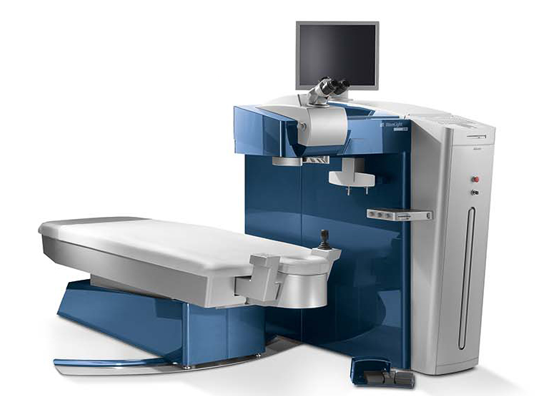

아낌없는 투자
수술의 정확도를 높이기 위해 안전을 인정받은 첨단장비 도입에
아낌없는 투자를 하고 있습니다.

SMILE VisuMax
(스마일 레이저)
스마일 수술은 통증이 거의 없고 일상생활 복귀가 빠른 안정적이고 정밀한 수술법입니다. 라식처럼 각막절편을 만들거나, 라섹처럼 각막상피를 벗기지 않고, 각막 표면을 그대로 투과할 수 있는 초정밀 펨토 세컨 드레이저 (비쥬맥스)를 이용하여 각막 내부에 원하는 두께로 정교한 렌즈 모양을 만들어 분리해 내는 시력 교정 수술입니다.

SMILE VisuMax
SMILE VisuMax
(시력 교정 수술 엑시머 레이저)
웨이브 프론트 옵티마이저 수술의 최상위 레이저 EX500 독일 WaveLight 사에서 제작한 알레그레토의 최상위 모델로서, 적은 각막 절삭량과 정확성 및 빠른 속도는 물론 안정성을 더한 엑시머 레이저의 결정판입니다. 500Hz Flying Spot 레이저의 빠른 속도 빠른 레이저 속도로 인한 부작용 최소화와 더욱 우수한 결과 구현 6차원 안구추적장치(1050Hz)로 더 빨리진 안구추적 반응속도 탑재 실시간 각막 두께 측정시스템으로 수술 안정성 극대화
LenS-AR
(레이저 백내장 수술)
미국 FDA, 유럽 CE, 한국 KFDA 등 여러 국가의 식약처로부터 안전성 승인을 받은 펨토초 레이저입니다. 초고속 샤임플러그 카메라를 이용해 안구를 360도 각도에서 촬영하여 약 2초에 걸쳐 수정체낭을 정확한 원형으로 절개하고 곧바로 레이저가 혼탁한 수정체를 파쇄합니다. 절개와 파쇄가 제로 에너지에 가까운 레이저로만 이루어지므로 각막 내피 세포를 보호할 수 있으며, 이로 인해 합병증 가능성도 낮습니다.
Stellaris Elite
(스텔라리스 엘리트)
경남 최초 도입한 최신 장비로 백내장/ 망막 수술시 모든 순간 정밀한 제어로 안전한 수술이 가능한 바슈롬사의 첨단 수술 장비입니다. 수술과정에서 시스템이 자동으로 안구내 압력을 일정하게 유지시켜서 수술 중 발생할 수 있는 합병증을 최소화 합니다. 강력한 극초음파를 이용하여 백내장 수술은 물론 유리체 절제수술시 효율적인 수술이 이뤄질 수 있도록 도움을 줍니다.
Stellaris PC
(스텔라리스 PC)
최소 절개창으로 수술할 수 있는 첨단 백내장 수술 장비입니다. 염증발생 down , 안정성 up, 합병증 발생 최소화 스텔라리스 장비는 백내장 수술 장비로서 현재 미국, 영국, 호주를 비롯해 세계 50여개국에 출시된 안전하고 간편한 수술 장비입니다. 기존 장비가 2.7mm~3.5mm를 절개하는 것에 비해, EQ 유체 공학 기술로 절반 정도인 1.8mm만 절개하여 안정적인 백내장 수술이 가능합니다.
PRP laser
(범망막 광응고술)
망막의 저산소 영역을 레이저로 직접 응고시켜 흉터로 만들고 주변부 망막을 광범위하게 응고시켜서 망막의 전반적인 산소 요구량을 낮춤으로써 신생 혈관의 생성을 차단하는 방법으로 혈관 신생인자가 방출되는 것을 막는 것이 주된 치료 기전입니다.
AQUA CELL IPL
(아쿠아셀 IPL)
IPL은 각막의 오일층 부족으로 인한 안구건조증에 대하여, 펄스광선을 통해 발생하는 미세한 온도 차이로 기능이 저하된 마이봄선의 기능 회복을 도와 주어 안구건조증을 완화시켜 줍니다.
Lumera T
(안과 수술용 현미경)
환부를 넓고 정밀하게 볼 수 있는 미세 수술 현미경으로, 백내장을 더 정확하고 안전하게 제거하여 수술의 완성도를 더욱 높였습니다. 또한, 자연광에 가장 가까운 광원을 이용하여 수술 시 빛에 의한 시신경 손상은 최소화합니다.